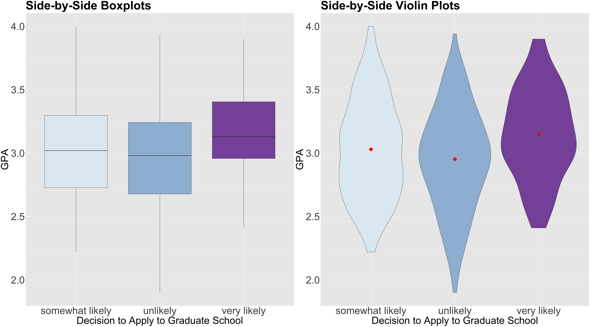
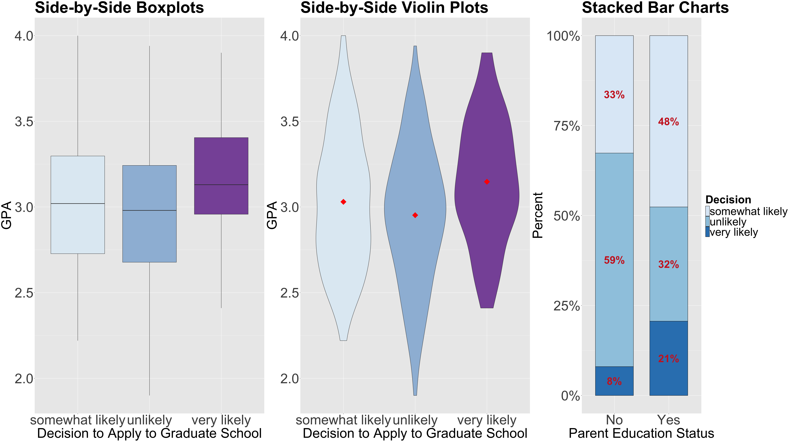
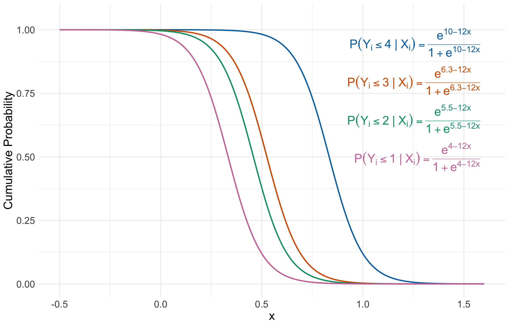

2.4. Main Statistical Inquiries
- Let us suppose we want to assess the following:
- Is
decisionstatistically related toparent_edandGPA? - How can we interpret these statistical relationships (if there are any!)?
- Is
GLMs: Ordinal Logistic Regression
By the end of this lecture, you should be able to:

college_data was obtained from the webpage of the UCLA Statistical Consulting Group.Rdecision: how likely the student will apply to graduate school, a discrete and ordinal response with three increasing categories (unlikely, somewhat likely, and very likely).parent_ed: whether at least one parent has a graduate degree, a discrete and binary explanatory variable (Yes and No).GPA: the student’s current GPA, a continuous explanatory variable.decision will be our response of interest.as.ordered().decision statistically related to parent_ed and GPA?decision is a discrete ordinal response, we have to be careful about the plots to be used in the EDA.decision and GPA , we will use these side-by-side plots: boxplots and/or violin plots.GPA is on the \(y\)-axis, and all categories of decision are on the \(x\)-axis.GPA by decision category in red points.
decision and parent_ed?decision with the categories found in parent_ed on the \(x\)-axis.
Heads-up: Categories \(1, 2, \dots, m\) implicate an ordinal scale here, i.e., \(1 < 2 < \dots < m\).
\[\begin{gather*} 1 = \texttt{unlikely} \\ 2 = \texttt{somewhat likely} \\ 3 = \texttt{very likely} \end{gather*}\]
\[ X_{i, \texttt{parent_ed}} = \begin{cases} 1 \; \; \; \; \mbox{at least one parent has a graduate degree},\\ 0 \; \; \; \; \mbox{neither of the parents has a graduate degree.} \end{cases} \]
decision for the following \(2\) situations:\[\begin{gather*} \text{Level } \texttt{somewhat likely} \text{ or any lesser degree versus level } \texttt{very likely} \\ \text{Level } \texttt{unlikely} \text{ versus level } \texttt{somewhat likely} \text{ or any higher degree} \end{gather*}\]
\[\begin{align*} \eta_i^{(\texttt{somewhat likely})} &= \log\left[\frac{P(Y_i \leq \texttt{somewhat likely} \mid X_{i, \texttt{GPA}},X_{i, \texttt{parent_ed}})}{P(Y_i = \texttt{very likely} \mid X_{i, \texttt{GPA}}, X_{i, \texttt{parent_ed}})}\right] \\ &= \beta_0^{(\texttt{somewhat likely})} - \beta_1 X_{i, \texttt{GPA}} - \beta_2 X_{i, \texttt{parent_ed}} \end{align*}\] \[\begin{align*} \eta_i^{(\texttt{unlikely})} &= \log\left[\frac{P(Y_i = \texttt{unlikely} \mid X_{i, \texttt{GPA}},X_{i, \texttt{parent_ed}})}{P(Y_i \geq \texttt{somewhat likely} \mid X_{i, \texttt{GPA}},X_{i, \texttt{parent_ed}})}\right] \\ &= \beta_0^{(\texttt{unlikely})} - \beta_1 X_{i, \texttt{GPA}} - \beta_2 X_{i, \texttt{parent_ed}}. \end{align*}\]
\[\begin{gather*} \frac{P(Y_i = \texttt{very likely} \mid X_{i, \texttt{GPA}},X_{i, \texttt{parent_ed}})}{P(Y_i \leq \texttt{somewhat likely} \mid X_{i, \texttt{GPA}},X_{i, \texttt{parent_ed}})} = \\ \exp\big(-\beta_0^{(\texttt{somewhat likely})}\big) \exp\big(\beta_1 X_{i, \texttt{GPA}}\big) \exp\big(\beta_2 X_{i, \texttt{parent_ed}}\big) \end{gather*}\] \[\begin{gather*} \frac{P(Y_i \geq \texttt{somewhat likely} \mid X_{i, \texttt{GPA}},X_{i, \texttt{parent_ed}})}{P(Y_i = \texttt{unlikely} \mid X_{i, \texttt{GPA}},X_{i, \texttt{parent_ed}})} = \\ \exp\big(-\beta_0^{(\texttt{unlikely})}\big) \exp\big(\beta_1 X_{i, \texttt{GPA}}\big) \exp\big(\beta_2 X_{i, \texttt{parent_ed}}\big). \end{gather*}\]
\[\begin{gather*} \text{Level } m - 1 \text{ or any lesser degree versus level } m\\ \text{Level } m - 2 \text{ or any lesser degree versus level } m - 1 \text{ or any higher degree}\\ \vdots \\ \text{Level } 2 \text{ or any lesser degree versus level } 3 \text{ or any higher degree}\\ \text{Level } 1 \text{ versus level } 2 \text{ or any higher degree}\\ \end{gather*}\]
\[\begin{gather*} \eta_i^{(m - 1)} = \log\left[\frac{P(Y_i \leq m - 1 \mid X_{i,1}, \ldots, X_{i,k})}{P(Y_i = m \mid X_{i,1}, \ldots, X_{i,k})}\right] = \beta_0^{(m - 1)} - \beta_1 X_{i, 1} - \ldots - \beta_k X_{i, k} \\ \eta_i^{(m - 2)} = \log\left[\frac{P(Y_i \leq m - 2 \mid X_{i,1}, \ldots, X_{i,k})}{P(Y_i > m - 2 \mid X_{i,1}, \ldots, X_{i,k})}\right] = \beta_0^{(m - 2)} - \beta_1 X_{i, 1} - \ldots - \beta_k X_{i, k} \\ \vdots \\ \eta_i^{(2)} = \log\left[\frac{P(Y_i \leq 2 \mid X_{i,1}, \ldots, X_{i,k})}{P(Y_i > 2 \mid X_{i,1}, \ldots, X_{i,k})}\right] = \beta_0^{(2)} - \beta_1 X_{i, 1} - \ldots - \beta_k X_{i, k} \\ \eta_i^{(1)} = \log\left[\frac{P(Y_i = 1 \mid X_{i,1}, \ldots, X_{i,k})}{P(Y_i > 1 \mid X_{i,1}, \ldots, X_{i,k})}\right] = \beta_0^{(1)} - \beta_1 X_{i, 1} - \ldots - \beta_k X_{i, k}. \end{gather*}\]
\[\begin{gather*} \eta_i^{(j)} = \log\left[\frac{P(Y_i \leq j \mid X_{i,1}, \ldots, X_{i,k})}{P(Y_i > j \mid X_{i,1}, \ldots, X_{i,k})}\right] = \beta_0^{(j)} - \beta_1 X_{i, 1} - \ldots - \beta_k X_{i, k} \\ \; \; \; \; \; \; \; \; \Rightarrow \; P(Y_i \leq j \mid X_{i,1}, \ldots, X_{i,k}) = \frac{\exp\left(\beta_0^{(j)} - \beta_1 X_{i, 1} - \ldots - \beta_k X_{i, k}\right)}{1 + \exp\left(\beta_0^{(j)} - \beta_1 X_{i, 1} - \ldots - \beta_k X_{i, k}\right)}. \end{gather*}\]
The standalone probability that \(Y_i\) will fall in the category \(j\) is computed as follows: \[ p_{i,j} = P(Y_i = j \mid X_{i,1}, \ldots, X_{i,k}) \\ = P(Y_i \leq j \mid X_{i,1}, \ldots, X_{i,k}) - P(Y_i \leq j - 1 \mid X_{i,1}, \ldots, X_{i,k}), \]
Hence: \[ P(Y_i = 1) = p_{i,1} \;\;\;\; P(Y_i = 2) = p_{i,2} \;\; \dots \;\; P(Y_i = m) = p_{i,m}, \]
Where: \[ \sum_{j = 1}^m p_{i,j} = p_{i,1} + p_{i,2} + \dots + p_{i,m} = 1. \]
A. Four link functions, four intercepts, and sixteen regression coefficients.
B. Five link functions, five intercepts, and five regression coefficients.
C. Five link functions, five intercepts, and twenty regression coefficients.
D. Four link functions, four intercepts, and four regression coefficients.
\[\begin{gather*} \eta_i^{(4)} = \log\left[\frac{P(Y_i \leq 4 \mid X_{i,1})}{P(Y_i = 5 \mid X_{i,1})}\right] = \beta_0^{(4)} - \beta_1 X_{i, 1} \\ \eta_i^{(3)} = \log\left[\frac{P(Y_i \leq 3 \mid X_{i,1})}{P(Y_i > 3 \mid X_{i,1})}\right] = \beta_0^{(3)} - \beta_1 X_{i, 1} \\ \eta_i^{(2)} = \log\left[\frac{P(Y_i \leq 2 \mid X_{i,1})}{P(Y_i > 2 \mid X_{i,1})}\right] = \beta_0^{(2)} - \beta_1 X_{i, 1} \\ \eta_i^{(1)} = \log\left[\frac{P(Y_i = 1 \mid X_{i,1})}{P(Y_i > 1 \mid X_{i,1})}\right] = \beta_0^{(1)} - \beta_1 X_{i, 1}. \end{gather*}\]
\[\begin{gather*} P(Y_i \leq 4 \mid X_{i,1}) = \frac{\exp\left(\beta_0^{(4)} - \beta_1 X_{i, 1} \right)}{1 + \exp\left(\beta_0^{(4)} - \beta_1 X_{i, 1}\right)} \\ P(Y_i \leq 3 \mid X_{i,1}) = \frac{\exp\left(\beta_0^{(3)} - \beta_1 X_{i, 1} \right)}{1 + \exp\left(\beta_0^{(3)} - \beta_1 X_{i, 1}\right)} \\ P(Y_i \leq 2 \mid X_{i,1}) = \frac{\exp\left(\beta_0^{(2)} - \beta_1 X_{i, 1} \right)}{1 + \exp\left(\beta_0^{(2)} - \beta_1 X_{i, 1}\right)} \\ P(Y_i \leq 1 \mid X_{i,1}) = \frac{\exp\left(\beta_0^{(1)} - \beta_1 X_{i, 1} \right)}{1 + \exp\left(\beta_0^{(1)} - \beta_1 X_{i, 1}\right)}. \\ \end{gather*}\]

MASS, we use polr(). The argument Hess = TRUE is required to compute the Hessian matrix of the log-likelihood function, which is used to obtain the standard errors of the estimates.We also use the Wald statistic \(z_j = \frac{\hat{\beta}_j}{\mbox{se}(\hat{\beta}_j)}\) to test the hypotheses: \[\begin{gather*} H_0: \beta_j = 0\\ H_a: \beta_j \neq 0. \end{gather*}\]
Provided the sample size \(n\) is large enough, \(z_j\) has an approximately Standard Normal distribution under \(H_0\).
R!unlikely|somewhat likely and somewhat likely|very likely refer to \(\hat{\beta_0}^{(\texttt{unlikely})}\) and \(\hat{\beta_0}^{(\texttt{somewhat likely})}\), respectively.GPA and parent_ed are statistically significant with \(\alpha = 0.05\).confint() can provide the 95% confidence intervals for the estimates contained in ordinal_model.decision with GPA and parent_ed.exp.estimate, along with the model equations on the original scale of the cumulative odds, we interpret the two regression coefficients above by each odds as follows:\[\frac{P(Y_i = \texttt{very likely} \mid X_{i, \texttt{GPA}},X_{i, \texttt{parent_ed}})}{P(Y_i \leq \texttt{somewhat likely} \mid X_{i, \texttt{GPA}},X_{i, \texttt{parent_ed}})} = \\ \exp\big(-\beta_0^{(\texttt{somewhat likely})}\big) \exp\big(\beta_1 X_{i, \texttt{GPA}}\big) \exp\big(\beta_2 X_{i, \texttt{parent_ed}}\big).\]
\(\beta_1\): “for each one-unit increase in the
GPA, the odds that the student isvery likelyversussomewhat likelyorunlikelyto apply to graduate school increase by \(\exp \left( \hat{\beta}_1 \right) = 1.82\) times (while holdingparent_edconstant).”
\(\beta_2\): “for those respondents whose parents attended to graduate school, the odds that the student is
very likelyversussomewhat likelyorunlikelyto apply to graduate school increase by \(\exp \left( \hat{\beta}_2 \right) = 2.86\) times (when compared to those respondents whose parents did not attend to graduate school and holdingGPAconstant).”
\[\frac{P(Y_i \geq \texttt{somewhat likely} \mid X_{i, \texttt{GPA}},X_{i, \texttt{parent_ed}})}{P(Y_i = \texttt{unlikely} \mid X_{i, \texttt{GPA}},X_{i, \texttt{parent_ed}})} = \\ \exp\big(-\beta_0^{(\texttt{unlikely})}\big) \exp\big(\beta_1 X_{i, \texttt{GPA}}\big) \exp\big(\beta_2 X_{i, \texttt{parent_ed}}\big).\]
\(\beta_1\): “for each one-unit increase in the
GPA, the odds that the student isvery likelyorsomewhat likelyversusunlikelyto apply to graduate school increase by \(\exp \left( \hat{\beta}_1 \right) = 1.82\) times (while holdingparent_edconstant).”
\(\beta_2\): “for those respondents whose parents attended to graduate school, the odds that the student is
very likelyorsomewhat likelyversusunlikelyto apply to graduate school increase by \(\exp \left( \hat{\beta}_2 \right) = 2.86\) times (when compared to those respondents whose parents did not attend to graduate school and holdingGPAconstant).”
predict() with the object ordinal_model, we can obtain the estimated probabilities to apply to graduate school (associated to unlikely, somewhat likely, and very likely) for a student with a GPA of 3.5 whose parents attended to graduate school.somewhat likely to apply to graduate school with a probability of 0.48.lecture2. That said, some R coding functions might not be entirely available for the polr() models.What happens if we do not fulfil the proportional odds assumption in our Ordinal Logistic regression model?
R!brant() from package brant implements this tool, which can be used in our polr() object ordinal_model:Omnibus represents the global model, while the other two rows correspond to our two regressors: parent_ed and GPA.probability delivers the corresponding \(p\)-values).Heads-up: The Brant Wald test essentially compares this basic Ordinal Logistic regression model of \(m - 1\) cumulative logit functions (i.e., the ordinal response has \(m\) categories) versus a set of \(m − 1\) correlated Binary Logistic regressions.
\[\begin{align*} \eta_i^{(\texttt{somewhat likely})} &= \log\left[\frac{P(Y_i \leq \texttt{somewhat likely} \mid X_{i, \texttt{GPA}},X_{i, \texttt{parent_ed}})}{P(Y_i = \texttt{very likely} \mid X_{i, \texttt{GPA}}, X_{i, \texttt{parent_ed}})}\right] \\ &= \beta_0^{(\texttt{somewhat likely})} - \beta_1^{(\texttt{somewhat likely})} X_{i, \texttt{GPA}} - \\ & \qquad \beta_2^{(\texttt{somewhat likely})} X_{i, \texttt{parent_ed}} \end{align*}\] \[\begin{align*} \eta_i^{(\texttt{unlikely})} &= \log\left[\frac{P(Y_i = \texttt{unlikely} \mid X_{i, \texttt{GPA}},X_{i, \texttt{parent_ed}})}{P(Y_i \geq \texttt{somewhat likely} \mid X_{i, \texttt{GPA}},X_{i, \texttt{parent_ed}})}\right] \\ &= \beta_0^{(\texttt{unlikely})} - \beta_1^{(\texttt{unlikely})} X_{i, \texttt{GPA}} - \beta_2^{(\texttt{unlikely})} X_{i, \texttt{parent_ed}}. \end{align*}\]
cumulative() from package VGAM.

DSCI 562 - Regression II